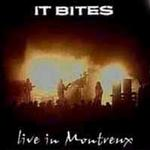

| Artist: | It Bites |
| Title: | Live In Montreux |
| Label: | self produced |
| Length(s): | 60 minutes |
| Year(s) of release: | 2003 |
| Month of review: | [09/2003] |
| 1) | Fanfare | 1.42 |
| 2) | Turn Me Loose | 5.12 |
| 3) | All In Red | 4.20 |
| 4) | Black December | 4.32 |
| 5) | Never Go To Heaven | 7.01 |
| 6) | Yellow Christian | 6.24 |
| 7) | Screaming On The Beaches | 6.08 |
| 8) | Calling All The Heroes | 6.16 |
| 9) | I Got You | 6.42 |
| 10) | Once Around The World | 15.46 |
During All In Red, Dunnery fires the audience on for a plodding piece of work and great supporting keys. Again, an incredible catchy piece of work especially the strong vocal harmonies of the chorus. Black December opens with rhythm guitar and quickly moves into the direction of a symphonic pop song. Sometimes I hear echoes of I'm Not In Love, sometimes I am reminded of Human Leaque's Don't You Want Me. But the resemblences are superficial, because in the heart this song is not different from the previous one. It is still It Bites. A well-oiled progprop song with some distinctive keyboard parts and some nice guitar work.
With Never Go To Heaven we arrive at the somewhat longer tracks, this one opening with harpsichord like keys. If you happen to know Jadis, but never heard this band, look and hear where they come from. And Nomzamo and Are You Sitting era IQ has some resemblances too. This is a more ballad like effort, somewhat slow with more powerful guitar chords setting in once in a while. A languid track with a fast and energetic guitar solo in the tail.
Yellow Christian is a willowy and waltzy affair. The shadowed vocals are very well done, the band is certainly well-oiled. The guitar line is distinctive, and the drumming is very varied. On the surface pure catchiness, but underneath it all, it is all less evident than may seem at first. On Screaming On The Beaches the keys open very eighties (but hey these are the eighties!). Irony dripping from the vocals, this is very British. Plenty of 'live' fooling around too.
Sometimes, the hitsingle of any given progband is jokingly referred to, but some bands actually pulled it off. In the case of It Bites this is Calling All The Heroes, which at least in the Netherlands, and I would assume also in the UK was single of some name. Among the songs here it is probably the most instantably accessible and grooviest. The guitar solo is a rowdy one, though and accessible does not mean it doesn't contain a keyboard solo.
I Got You is the first encore opening with bombastic keys and guitars, with a loud grumbling bass. During the vocal passage, the keys can be a bit discordant. A very energetic track.
Once Around The World was recorded in the London Astoria and is not part of the previous concert. This is one of their epics here reaching over fifteen minutes. The build up is slow, and atmospheric. There is something of Peter Gabriel in the voice of Dunnery, the mood is quite Genesis like here. And the link stays, although the band manages to take the music of Genesis from the seventies their time. Later when the music becomes funkier, the links disappears. In a later section, the music goes back to the twenties (of the 20th century). The backing vocals come out a bit less well than in Montreux I think. It seems to me the band is fooling around a bit here, not taking themselves very seriously at all. The conclusion has a strong melodramatic melody.